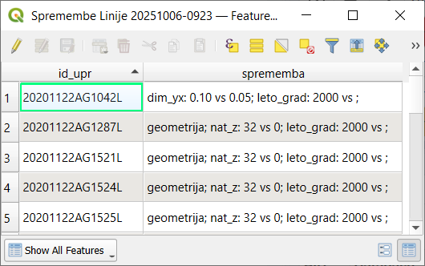
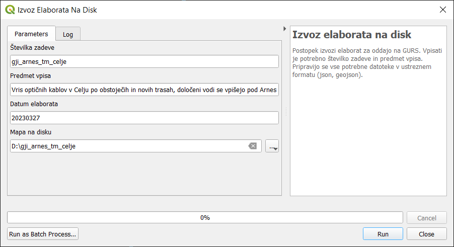
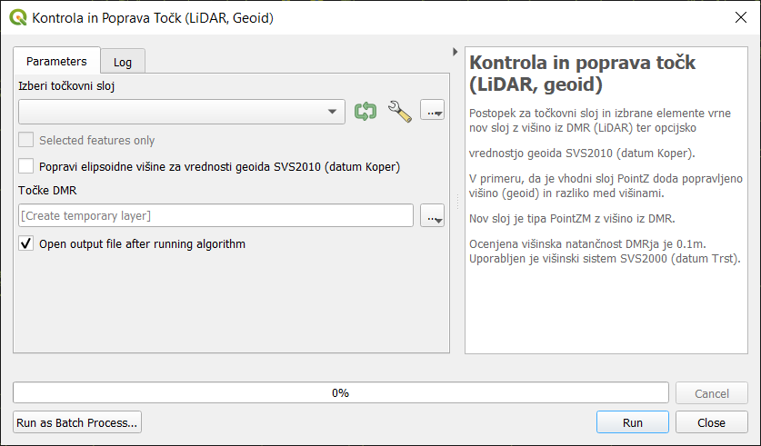

Orodja vtičnika
Orodja predstavljajo glavnino dela z vtičnikom in so dostopna preko menija kot skupina GJI ELaborat, ki je razdeljena na posamezne podskupine.
Processing Toolbox in GJI Elaborat
1 Uvoz
Orodja za uvoz podatkov v elaborat (skupina ELABORAT V PRIPRAVI). Ločimo tri vrste uvoza podatkov:
1.1 Uvoz elaborata
Uvozijo se datoteke že izdelanega elaborata iz lokalne mape z vsemi tipi sprememb (novi, spremenjeni, brisani) in atributi iz posameznih slojev.
Opozorilo
Mapa lahko vsebuje podatke v starem SHP formatu ali novem GeoJSON, vendar pa mora ena mapa vsebovati samo en format.
1.2 Uvoz lokalnih slojev
Najlažje je uvoziti lokalne sloje, ki so že v projektu. Možno pa je tudi izbrati pot do sloja na disku. Za uvoz atributnih podatkov sloja je pomembno da se polja ujemajo s polji v bazi - Podatkovna struktura.
Pomembno
Podatki se uvozijo kot novo dodani (D), razen kadar sloj vsebuje polje
ID_UPR. V tem primeru se izvede kontrola na podlagi primerjave vrednosti poljaID_UPRobjekta ki se uvaža in bazo. Če vrednost ne obstaja v bazi se element uvozi kot D, če obstaja in v primeru razlike v podatkih ali geometriji pa se uvozi iz baze ter ustrezno spremeni (S).Nasvet
Kadar želimo uvoziti tudi objekte, ki so namenjeni brisanju, mora sloj vsebovati polje
TIP_SPRin objekti za brisanje vrednost B.Uvoz točk (3D)
Izberemo točkovni sloj za uvoz ter določimo šifro objektov GJI. Kadar so vsi objekti v sloju istega tipa vpišemo pripadajočo šifro GJI, kadar pa imamo različne objekte, ki imajo ustrezno šifro določeno v polju, pa uporabimo dodatne možnosti, kjer izberemo to polje. Postopek je prikazan na primeru uporabe orodja Set Z value.
Nasvet
V primeru, da imamo samo 2D sloj in višine pripisane v atributni tabeli uporabimo orodje Set Z value za kreiranje 3D sloja.
Uvoz linij ali poligonov
Izberemo linijski ali poligonski sloj za uvoz. Uvozimo lahko tudi 2D podatke in z ločenim postopkom še višine, če jih imamo. Opcijsko lahko vpišemo tudi kdo je meritve izvajal, kar se bo zapisalo v polje
MERIL.Uvoz višin
Izberemo točkovni sloj z višinami ter označimo ali so višine za linije ali poligone.
Opomba
V primeru da sloj višin vsebuje polje
ID_UPRse bodo višine pripisale pripadajočim objektom glede na vrednost poljaID_UPR, drugače pa izključno glede na lokacijo. V vsakem primeru se morajo točke za pripis višin nahajati na lomnih točkah linije ali poligona oz. znotraj minimalne tolerance.Opozorilo
V primeru da ima linija ali poligon na točki iz izbranega sloja že obstoječo višino se bo ta zamenjala z novim podatkom!!
1.3 Uvoz podatkov GURS
S temi postopki uvozimo obstoječe stanje zbirnega katastra GJI v elaborat za nadaljnjo obravnavo. Vsi podatki se uvozijo kot nespremenjeni (N).
Opomba
Vedno se pri uvozu upoštevajo podatki vrste infrastrukture ter privzetega upravljavca iz nastavitev projekta.
- Izbiramo lahko med 3 različnimi načini uvoza podatkov GURS:
FILTER (vnesemo atributni filter na podlagi katerega se izberejo in uvozijo elementi)
OBMOČJE (določimo pravokotnik kot območje uvoza)
RAZDALJA (določimo razdaljo v metrih od novo dodanih linij v elaboratu)
Opozorilo
Postopki uvoza podatkov GURS lahko trajajo več minut. Pri določitvi območja uvoza s pravokotnikom označimo samo območje potrebno za izdelavo elaborata!
2 Delo
Orodja za obdelavo podatkov, ki se že nahajajo v elaboratu:
Brisanje vseh podatkov v elaboratu (ponastavitev na začetno stanje)
Brisanje podvojenih linij (možnost ignoriranja usmeritve linij, prenos cevi in kablov za projekte Elektronskih komunikacij)
Razbijanje linij na različne načine, kjer se atributi osnovne linije prenesejo na novo nastale z razbijanjem.
Snap obstoječih linij na nove
3 Delo EL-KOM
Orodja za obdelavo podatkov elaborata elektronskih komunikacij:
Dodajanje cevi in kablov na različne načine
Podaljšanje kabla za izbrane cevi/trase
Generiranje hišnih priključkov
Preračun omrežja (network)
9 Zaključek
9.1 Analiza spremenjenih elementov
Postopek v tabelo zapiše v enotno polje spremembe za vsak spremenjen element sloja.
V primeru da element nima sprememb se mu tip spremembe nastavi na N (nespremenjen).
9.2 Atributiranje elementov
Orodje za paketno atributiranje elementov, ki so brez podatkov v določenih poljih in jim želimo vpisati enake podatke v enem koraku. Ta polja so:
NAT_Z- Točnost določitve višineNAT_YX- Točnost določitve položajaVIRDAT_VIR- Datum viraLETO_GRAD- Leto gradnje oz. zadnje obnove
V primeru elektronskih komunikacij še:
ATR1- Lega traseATR2- Vrsta omrežja

Atributiranje elementov za projekt elektronskih komunikacij
Dodatno pa postopek atributiranja izvede tudi naslednje obdelave podatkov:
pripis Z koordinate za točke, ki so brez višine na podlagi vrednosti polja
Z, če je večje od 0pripis Z koordinate za točke, ki so brez višine na podlagi višine iz pripadajočega loma linije
pripis
DAT_VIRinLETO_GRADna točke, ki imajo to prazno na podlagi podatka iz pripadajoče linijeizračun polja
LETO_GRAD, kjer je prazno, za točke in linije na podlagi poljaDAT_VIR,določitev polja
Zza točke na podlagi Z koordinate ter poljaSIF_VRSTEinDIM_Z,usklajevanje polj
NAT_YXinVIRglede na pravila GURS-a,za EL-KOM določitev
DIM_YXinDIM_Zza linije na podlagi dimenzij cevi če obstajajo na trasi ali pa števila kablov ki potekajo po trasiza EL-KOM določitev
DIM_YXinDIM_Zza točke 6110 - omarica (0,5 in 1,20) in 6107 - jašek (0,5 in 0,6) (samo za tiste ki so brezDIM_YXaliDIM_Z)
9.3 Izvoz elaborata na disk
Izvoz podatkov za oddajo na GURS. Vpiše se številka zadeve in predmet vpisa, kar se shrani v bazi za kasnejše izvoze.
Pripravijo se vse potrebne datoteke v ustreznem formatu (GeoJSON in JSON). Dodatno se kreira tudi kompresirana ZIP datoteka, skladno z navodili GURS.
Opomba
Izvoz omogoča kreiranje več elaboratov naenkrat, glede na vpisane matične številke upravljalcev za elemente (linije, točke, poligone)
v polju MAT_ST.
To pomeni da lahko večji uporabniki (npr. komunalna podjetja), ki vodijo svoj operativni kataster in so izvajalci GJS na območju več različnih upravljavcev (občin), uvozijo vse svoje podatke paketno v isti projekt in jih nato v enem koraku tudi izvozijo za oddajo na GURS.
Potrebno je samo zagotoviti pravilen vpis matičnih številk.
Opozorilo
Izvozijo se samo elementi, ki imajo vpisan pravilen podatek o matični številki upravljavca. Če podatka ni, oz. če ne obstaja v evidenci poslovnih subjektov, se takšni elementi ne izvozijo.
Posebnost pri tem pravilu je matična številka 9999999, ki pomeni neznane lastnike hišnih priključkov za vodovod. Podatki s to matično št. se izvozijo v ločen elaborat!
Izvoz več elaboratov z opozorilom o neobstoječih matičnih številkah
Dodatno se vsem izvoženim elementom v bazi zapiše datum in čas izvoza.
9.4 Povrnitev spremenjenih in brisanih elementov (Undo)
Postopek povrne izbrane spremenjene in brisane elemente na prvotno stanje in jim nastavi tip spremembe N.
GEO-PORTAL
Orodja za prenos podatkov na GEO-PORTAL in druge povezane akcije za določene naročnike, ki uporabljajo to storitev.
Orodja
Vsebuje orodja, ki ne spreminjajo podatkov v elaboratu in se lahko uporabljajo tudi izven pripadajočega projekta za GJI.
Kontrola in poprava točk (LiDAR, geoid)
Za točkovni sloj izvede pripis višin iz Digitalnega modela reliefa (DMR), ki je bil generiran iz podatkov LiDAR in predstavlja najbolj natančne podatke o reliefu za celotno državo.
V primeru, da je vhodni sloj v 3D obliki (PointZ) izračuna tudi razliko med originalno višino in višino iz DMR.
Dodana je možnost preračuna višin na podatke geoida (SVS2010, datum Koper), v primeru da vsebuje vhodni sloj elipsoidne višine.
Napni linije na DMR (LiDAR)
Postopek elementom linijskega sloja določi Z koordinato za vsako lomno točko na podlagi Digitalnega modela reliefa (DMR).
Opcijsko lahko podamo parameter odmik ki se bo upošteval pri vseh višinah.
Nasvet
Za upoštevanje globine je potrebno vpisati negativno številko!.
Rezultat je nov sloj tipa LineStringZ z višinami iz DMR.
Pridobi višino posamezne točke iz DMR (LiDAR)
Postopek za podano točko vrne informacijo o višini na podlagi podatkov DMR (LiDAR).
Uvoz in prikaz SHP podatkov iz množice ZIP datotek
Postopek iz podane mape na disku iz vsake ZIP datoteke uvozi in združi SHP datoteke z istim imenom ter jih prikaže v legendi.
Postopek doda polje DAT_VIR (datum datoteke) in DELO (ime zip datoteke).
Nasvet
Primerno za uvoz in prikaz terenskih podatkov pred nadaljno obdelavo!